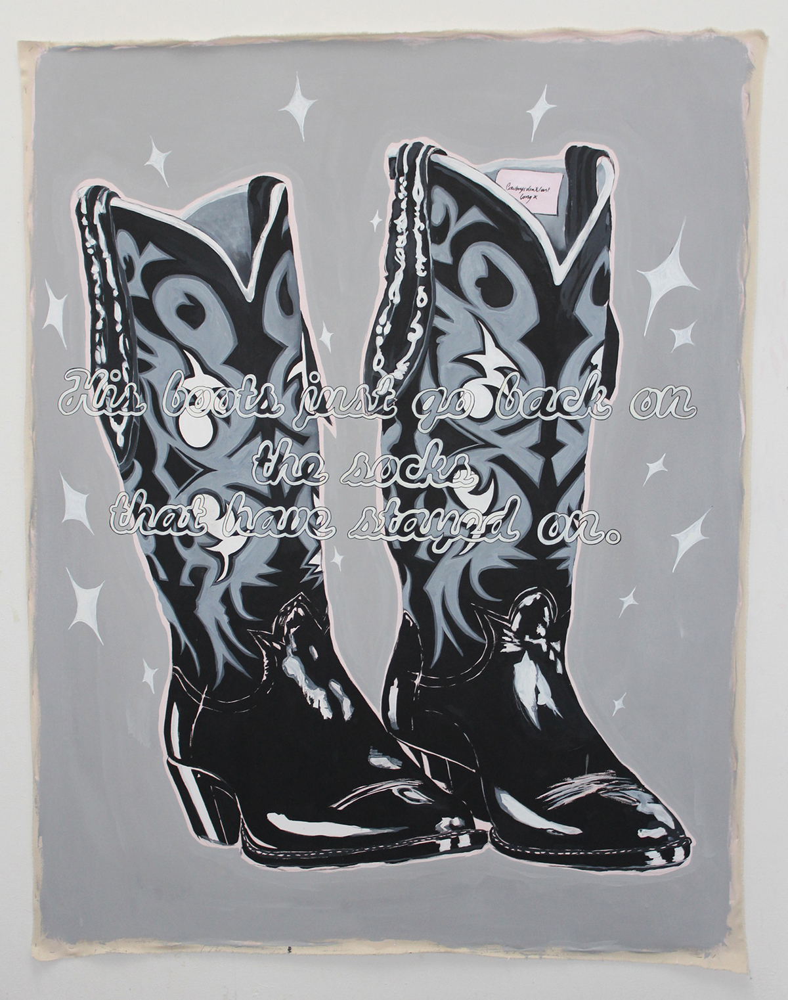

Paintings


"Cowboys Don't Last Long" is a painting inspired by iconic American advertising of the 1960’s, Kirsty MacColl, and the artist's personal encounters with somewhat disappointing cowboys. This piece is a commentary on the perception of The Cowboy as the peak of "alpha-dog" masculinity - something that the artist subverts here with the camp-ness of these sparking boots and the text that suggest that perhaps encounters with cowboys are ultimately less exciting than they seem. It is a comment on notions of masculinity in popular cinema - specifically the tropes of male protagonists in Westerns - that has a solemn and pessimistic tone. As we know, many of these films often end with the death of the protagonist cowboy figure, bringing a double-meaning of the phrase "Cowboys Don't Last Long" that seems to point to the destructive nature of portraying these violent, lawless and lonesome male characters as pinnacles of masculinity. Acrylic and housepaint on canvas Dimentions: 210 x 170cms Created: November 2019
"Boys Boys Boys" is a painting depicting Howdy Doodie the, once-beloved, childhood TV star of the 1950s and '60s. His dead eyes stare out of the canvas through a masculine-reimagining of the familiar seedy nightclub neons that flash: "GIRLS GIRLS GIRLS" to potential customers. Peering through the letters, Doody's enormous scale poses him as a figure of imposing and unnerving authority. The all-American puppet appears in black and white, taking away any chance of appearing to us as a figure of nostalgia. Instead, he seems to be a confused-advertisement, an image of boyhood charm that has grown ugly and uncomfortable with age, an anachronistic reference that serves as a reminder of a past now thought of as, at best, suspicious and, at worst, horrendous. Acrylic and house paint on canvas Dimentions: 221 x 190cms Created: October 2019